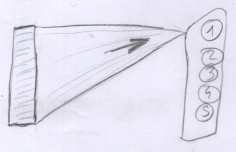

Introduction
Eminence indicators
Given a professional group, the purpose is to associate an eminence rank to each person. To build these associations, one can use several informations at disposition. An example is given by Suitbert Ertel, who couted the number of times a sportsman is cited in a predefined list of books. Other indications for sportsmen could be the palmares in competitions, the presence of sportsmen in web sites.Each piece of information is called here an eminence indicator.
Indicators are specific to a professional group. For example, Olympic Games palmares can be used to rank sportsmen, but are meaningless to rank painters.
 While there are various eminence indicators, they share common characteristics :
While there are various eminence indicators, they share common characteristics :
- Data : they are based on data that do not depend on the persons who build the ranking. For example, the fact that there exists books takling about sport, the fact that sport competitions exist...
-
Rules : they determine how the data are used to build conclusions about eminence. For example, which books are selected to perform citation counts, how many eminence ranks citation count generates, how a given citation count is assoiated to a given eminence rank.
These rules depend on arbitrary choices done by the persons who build the ranking.
Precautions
Divide by periods
For a given discipline, the available eminence indicators vary with time. For example, Nobel prizes are only relevant for persons active since the beginning of the 20th century. In order to compare what is comparable, the history of each discipline must be divided in coherent periods of time. Major events like world wars can probably be used as period boundaries for most of the disciplines.National bias
When ranking persons of a given discipline, care must be taken to avoid national bias. For example, if citation count is based on a list of books or web sites, if a particular country is over-represented, there is a risk to over-rate persons of this country.Global ranking
Building a global rank consists in combining several indicators to build a synthesis (see below). This introduces other arbitrary choices :- Choose the number of ranks (Ertel used 5).
- Choose the indicators that are used.
- Give the rules to combine the indicators.
Exemples of eminence indicators
Human opinion
A specialist or anyone interested by a discipline can rank eminent persons.One could for example build 3 groups : very eminent (rank 1), eminent (rank 2), moderately eminent (rank 3).
 Or maybe still divide in 3 eminence levels, and say that some persons are between rank 1 and 2 and some between rank 2 and 3.
Or maybe still divide in 3 eminence levels, and say that some persons are between rank 1 and 2 and some between rank 2 and 3.
 Arbitrary parts :
Arbitrary parts :
- Choose the persons who perform the rank.
- Associate the ranking(s) to a global indicator.
Citation count
This was done by Suitbert Ertel. Given a list of books, established in advance, count the number of times a person is cited, and use this to build a ranking. Arbitrary parts :
Arbitrary parts :
- Establish a list of books.
- Associate citation count to eminence ranks (for example, Ertel decided that any person with a count superior or equal to 4 is in eminence rank 1).
Link count
This can be done from web sites which contain biographies of persons of given professional groups, like Wikipedia. Eminence indicators can be built counting hypertext links pointing to the pages of the different persons of a group. This is similar to citation count.Here are two examples that permit to rank mathematicians :
- Part of the data available on Wikipedia can be retrieved using Wikidata. One of the fields that Wikidata offers is called linkcount, which is the number of pages pointing to a given page ; this can be used to rank persons. See the page about Wikidata for details.
- The MacTutor History of Mathematics archive is a site containing biographies of mathematicians. This site does not provide a service similar to Wikidata, but it's possible to use classical data mining technics to extract data from the site and build a sorted list. This was done by a program published on github.com/tig12/mactutor-by-links.
Arbitrary parts :
- Choose the sites retained to build the indicators.
- Associate link count to eminence ranks.
Search engines
A similar work can be done counting the number of times a given person has been searched for, and the number of clics to a page concerning this person. This could be done for example using Google Trends API (Application Programing Interface). Google Trends does not give the absolute numbers of queries concerning a person, but permits to compare the numbers related to two or more persons, which is sufficient to sort the persons.This method seems to contain less arbitrariness than the previous methods.
Nobel prize
Different kinds of awards can be used. For example, use Nobel prize lists to associate the laureates with top-level rank (n° 1).In this case, the associations between persons and ranks could look like this : 
Académie des sciences
Presence of persons in various lists can be used. This can lead to associations looking like this : This example is obtained saying that members are rank n°1 and correspondants are rank n° 2.Building a globak rank
The final step is to build a global rank from the different indicators concerning a professional group.Ther may exixt contradictions between indicators. But if indicators are meaningful, it's possible to hope that they will globally go in the same direction, allowing a consensus to emerge.
For a given professional group, the results of the various indicators can be represented as a table. For example, for mathematicians :
| Wikidata | MacTutor | Field medal | Historian of sciences 1 | etc. | |
|---|---|---|---|---|---|
| person 1 | 1 | 1 | 1 | 1 | |
| person 2 | 2 | 3 | 3 | ||
| etc. |
Persons in p1 were associated to rank n° 1.
Persons in both in p1 and p2 were associated to rank n° 1 and 2.
There will probably be exceptions and particular cases, but it seems reasonable to hope that a consensus can be obtained for at least part of the persons of a professional group.